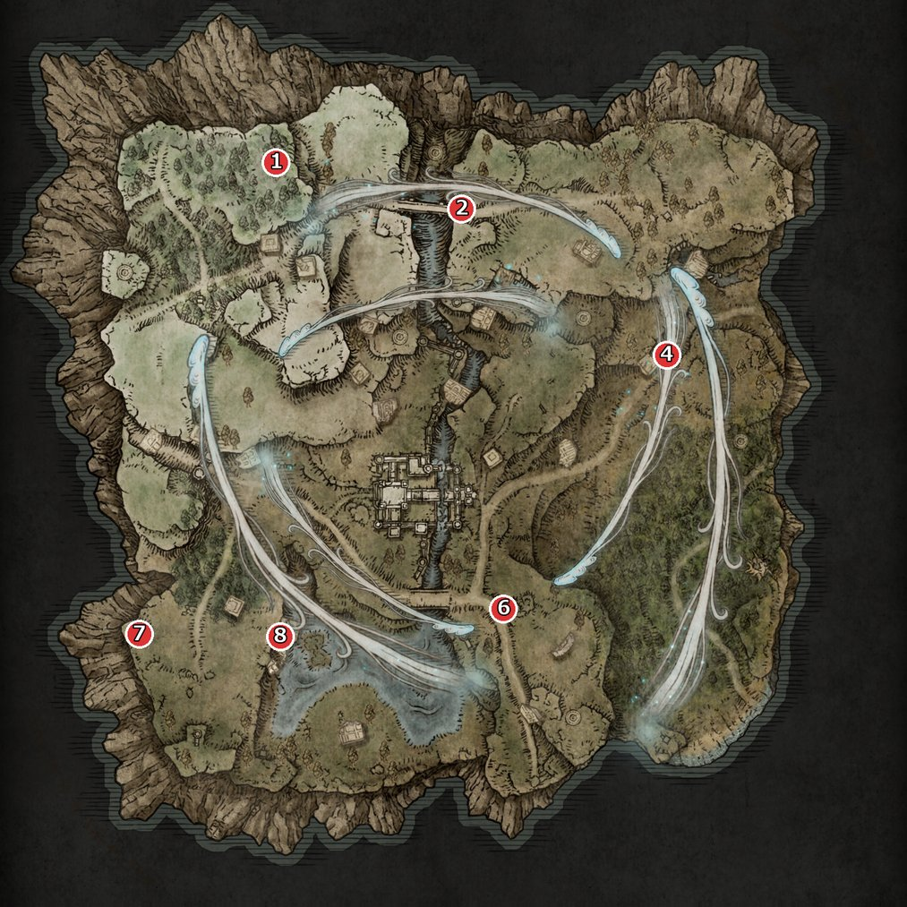
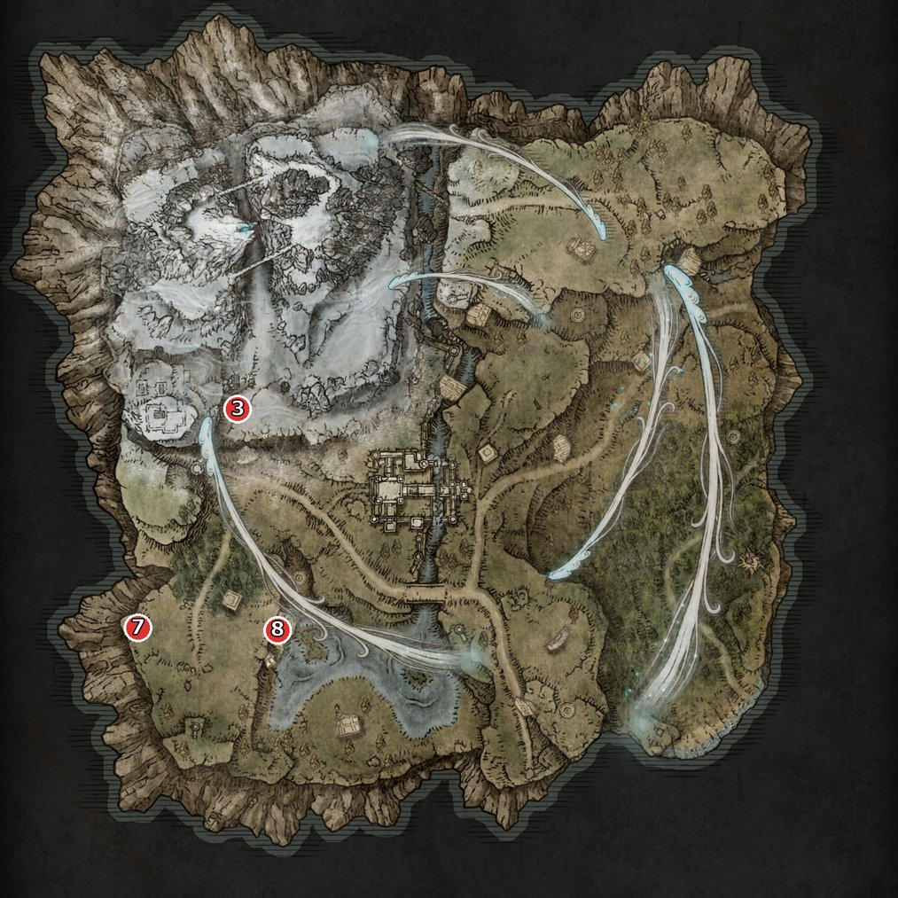
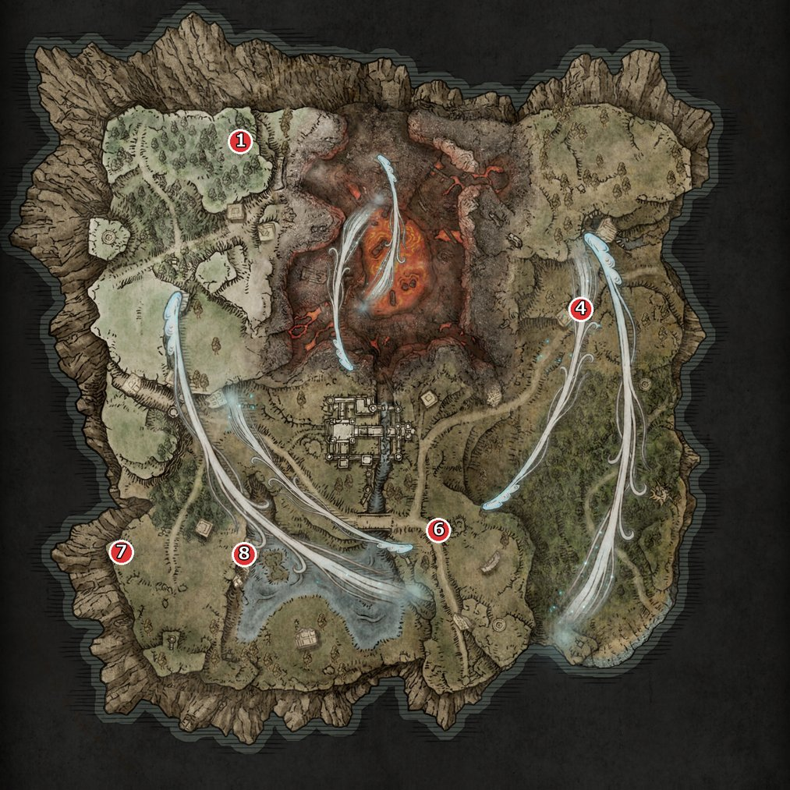
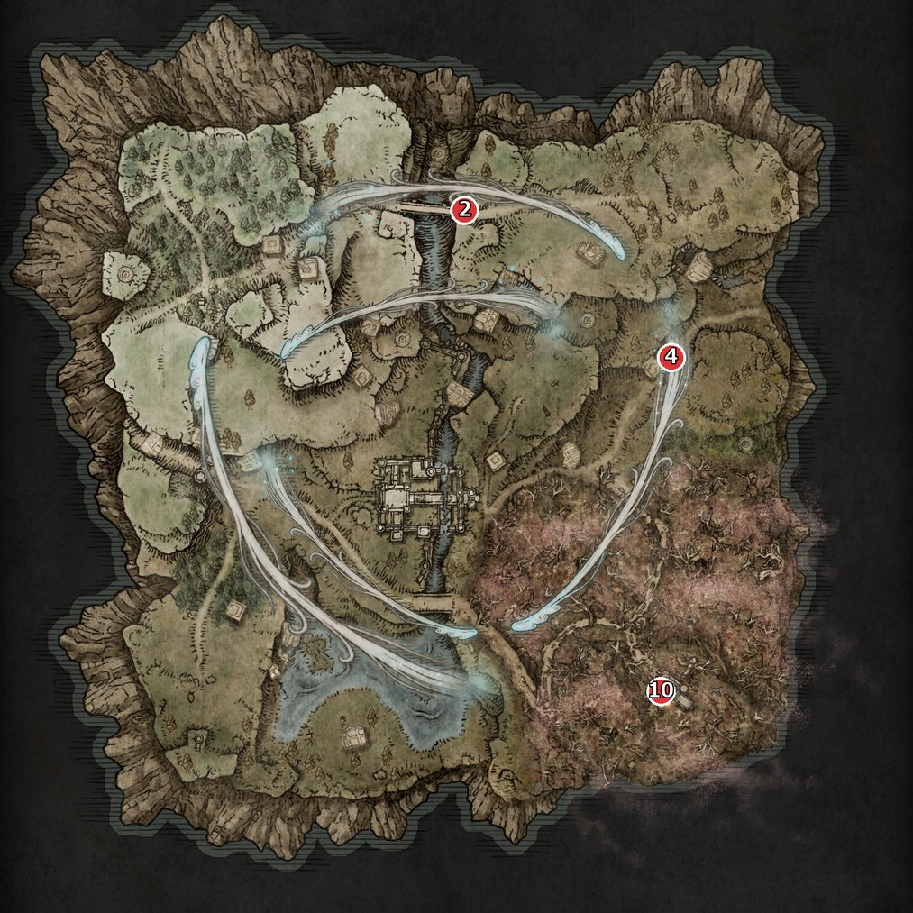
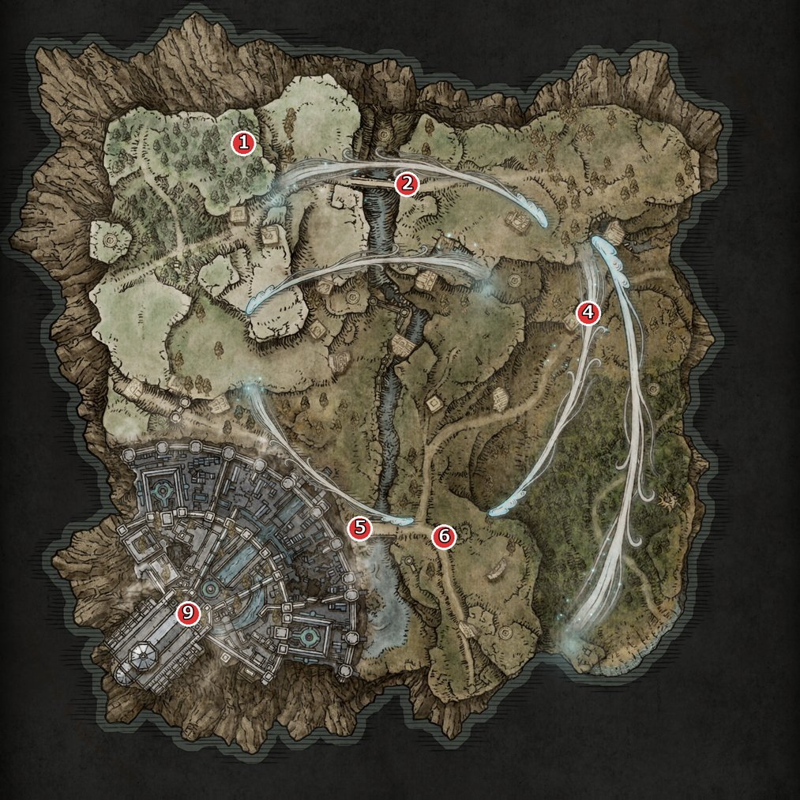
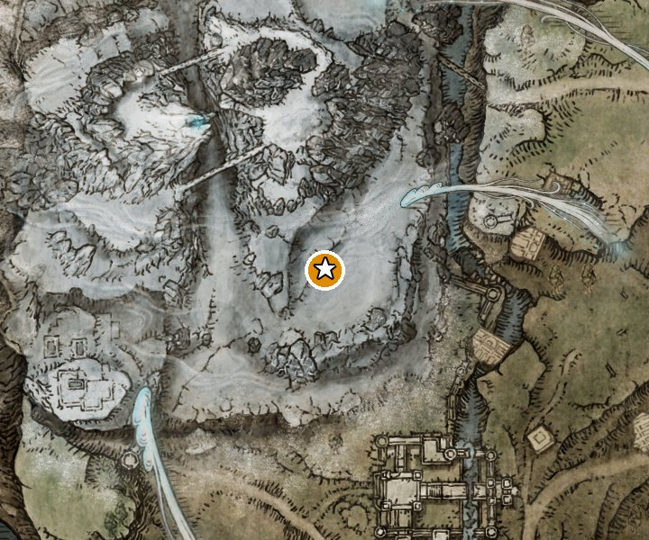
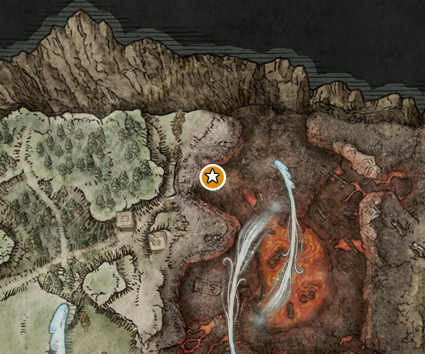
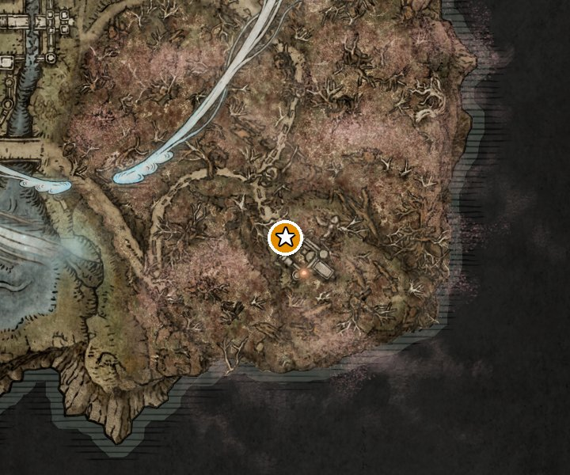
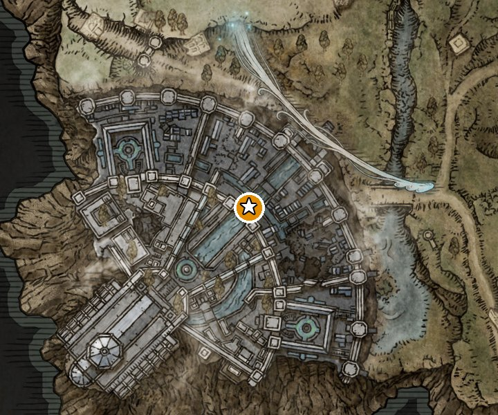

ミミック・イースターエッグ
データ: Daybreak 2.1.9 Beta1-Hotfix1（2026-10-09 取り込み） ／ 生成: 2026-10-09
| 目次 |
ミミック
- Daybreak で追加。フィールドの特定の敵を倒すと、一定の確率でその場に別の強い敵（ミミック）が現れる。
- 倒した敵の位置にワープして出てくる（出現時にエフェクトが出る）。
- 1回の出撃（シード）で出るミミックは1か所だけ。出撃ごとに 0〜99 の数が1つ選ばれ、その数を受け持つ場所のミミックだけが出る（ゲームデータのランダム出現の抽選。6つの組が 16〜17% ずつ受け持っていて、重なりは無い）。表の「確率」はその場所が選ばれる確率。MOD の更新内容（2.1.8）の「1シードにつき必ず1回だけ、ランダムな場所に出現する」と一致する。
- 同じ組の場所どうしは地変が重ならないように分かれている。ただし地変によっては、選ばれた組の場所がその地変に無く、ミミックが出ないことがある（下の「地変ごとの出る確率」）。
- ミミックは潜在する力を落とす。枠1が不完全な産まれ直し、枠2がキャラ専用の強化、枠3が得意武器（レア90% / レジェンド10%）。
- 場所はリムベルド（フィールド）の決まった地点。地変の種類によって、いる場所といない場所がある（表の「地変」と下の地図）。
- 敵の名前の「（仮）」は、日本語名が分からず英語名をカタカナにしたもの（名前にマウスを乗せると英語名が出る）。場所の名前は Smithbox の有志による英語名を訳した仮の名前。地図の位置はマップ配置データの座標から描いたおおよその位置。
出る場所
「倒す敵」を倒すと「出てくる敵」が現れる。No. は下の地図の番号。HPは素の値（人数・夜の深さによる補正の前）。
| No. | 倒す敵 | 出てくる敵 | 確率 | HP | 場所 | 地変 |
| 1 | スターコーラー（仮） | アラバスターロード（仮） | 17% | 162 → 1985 | 北西の端 | 通常 地変：火口 地変：隠れ都ノクラテオ |
|---|---|---|---|---|---|---|
| 2 | ゴドリック兵 | 不明（c5580） | 17% | 192 → 1304 | 聖人橋〜召喚の村 | 通常 地変：腐れ森 地変：隠れ都ノクラテオ |
| 3 | ゴドリック歩兵（仮） | 不明（c4420） | 17% | 147 → 1567 | 南西の山嶺 | 地変：山嶺 |
| 4 | 混種 | トロル | 17% | 192 → 1901 | マリカの第三教会への道 | 通常 地変：火口 地変：腐れ森 地変：隠れ都ノクラテオ |
| 5 | ゴドリック歩兵（仮） | 人さらいの乙女人形 | 16% | 147 → 1801 | ノクラテオの入口 | 地変：隠れ都ノクラテオ |
| 6 | さまよう貴人 | ルーンベア | 17% | 85 → 1592 | 城の前 ノクラテオの入口の東 | 通常 地変：火口 地変：隠れ都ノクラテオ |
| 7 | 腐った亡者 | ラージワームフェイス（仮） | 16% | 376 → 1887 | 南西の端・西の湖 | 通常 地変：山嶺 地変：火口 |
| 8 | スカラベ | 不明（c4420） | 16% | 1 → 1567 | 南西の端・西の湖 | 通常 地変：山嶺 地変：火口 |
| 9 | 霊廟騎士 | セメタリーシェイド（仮） | 16% | 576 → 1905 | ノクラテオの内層 | 地変：隠れ都ノクラテオ |
| 10 | ゴドリック兵 | ジャイアントドッグ（仮） | 17% | 192 → 2368 | 南東の腐れ森 | 地変：腐れ森 |
地図
赤い丸の番号が上の表の No.（倒す敵がいる位置。ミミックはそこに出る）。地変ごとに開いて見る。
通常（No. 1・2・4・6・7・8）

地変：山嶺（No. 3・7・8）

地変：火口（No. 1・4・6・7・8）

地変：腐れ森（No. 2・4・10）

地変：隠れ都ノクラテオ（No. 1・2・4・5・6・9）

地変ごとの出る確率
その地変のとき、1回の出撃でどこかにミミックが出る確率（出る場所の候補の確率の合計）。大空洞は MOD にマップが入っていないので不明。
| 地変 | ミミックが出る確率 | 候補 |
| 通常 | 100% | No. 1・2・4・6・7・8 |
|---|---|---|
| 地変：山嶺 | 49% | No. 3・7・8 |
| 地変：火口 | 83% | No. 1・4・6・7・8 |
| 地変：腐れ森 | 51% | No. 2・4・10 |
| 地変：隠れ都ノクラテオ | 100% | No. 1・2・4・5・6・9 |
落とす潜在する力
どのミミックも同じ。
枠1: 不完全な産まれ直し
枠2: キャラ専用の強化
枠3: 得意武器のレア武器 90% / 得意武器のレジェンド武器 10%
イースターエッグ
- 地変ごとに、ほかの作品のボスがリムベルドのフィールドボスとして紛れ込んでいる。
- 出現の条件ははっきりしていない。データ上はその地変の区画に置かれていて、出現の抽選も、出し入れするイベントも見つからない。ただし、出なかったこともあるという情報があるので、ほかに条件があるかもしれない（要確認）。白竜は、すぐ近くの地点に遭遇戦・封牢などが置かれるシードがある（山嶺の500シードのうち100）。そのときに出ない可能性がある。
- 戦うとボスとしてHPバーが出て、元の作品のボス戦の曲が流れる。倒すと撃破の表示が出る。
- Daybreak で追加された敵で、フィールドのボス戦のイベントが付いているものをデータから探して載せている。ゲームでの確認はまだ。
| ボス | 地変 | 場所 | HP | 元ネタ（流れる曲から） |
| 白竜 | 地変：山嶺 | 南東の山嶺 | 2666 | ダークソウル「白竜シース」 |
|---|---|---|---|---|
| 怨嗟の鬼 | 地変：火口 | 北西の火口 | 2784 | SEKIRO「怨嗟の鬼」 |
| 腐敗の女神 | 地変：腐れ森 | 南東の腐れ森 | 2500 | エルデンリング「ミケラの刃、マレニア」の第2形態 |
| 冷たい谷の番犬 | 地変：隠れ都ノクラテオ | ノクラテオの入口 | 1660 | ダークソウル3「冷たい谷のボルド」 |
白竜
- 地変：山嶺のリムベルドの南東の山嶺（m60_43_38_10）。HP 2666。
- 同じ場所に 雪原トロルたち もいる。
- 元ネタ: ダークソウル「白竜シース」（ボス戦の曲 Seath）。
- 落とす物: 枠1: 得意武器のレジェンド武器 15% / レジェンド武器 85%
枠2: 得意武器のレア武器 35% / レア武器 60% / レジェンド武器 5%
枠3: 潜在する力（8） 95% / さまよう祝福 5%

怨嗟の鬼
- 地変：火口のリムベルドの北西の火口（m60_43_39_20）。HP 2784。
- 同じ場所に 亜人の女王・王配の赤狼 もいる。
- 元ネタ: SEKIRO「怨嗟の鬼」（ボス戦の曲 DoH）。
- 落とす物: 枠1: 得意武器のレジェンド武器 15% / レジェンド武器 85%
枠2: 得意武器のレア武器 35% / レア武器 60% / レジェンド武器 5%
枠3: 潜在する力（8） 95% / さまよう祝福 5%

腐敗の女神
- 地変：腐れ森のリムベルドの南東の腐れ森（m60_45_36_30）。HP 2500。
- 元ネタ: エルデンリング「ミケラの刃、マレニア」の第2形態（ボス戦の曲 Malenia）。
- 落とす物: 枠1: 得意武器のレジェンド武器 15% / レジェンド武器 85%
枠2: 得意武器のレア武器 35% / レア武器 60% / レジェンド武器 5%
枠3: 潜在する力（8） 95% / さまよう祝福 5%

冷たい谷の番犬
- 地変：隠れ都ノクラテオのリムベルドのノクラテオの入口（m60_43_37_50）。HP 1660。
- 同じ場所に 黄金カバ もいる。
- 元ネタ: ダークソウル3「冷たい谷のボルド」（ボス戦の曲 Vordt2）。
- 落とす物: 枠1: 得意武器のレジェンド武器 15% / レジェンド武器 85%
枠2: 得意武器のレア武器 35% / レア武器 60% / レジェンド武器 5%
枠3: 潜在する力（8） 95% / さまよう祝福 5%

奴隷騎士ゲール（第2形態）
- 夜ボス「奴隷騎士ゲール」（夜の王のページの夜ボス一覧）は、倒すと第2形態「暗魂を求めし者」が現れる（ダークソウル3と同じ）。
- MOD のマップ配置データで、ゲールがいるのはこの夜ボスの戦場だけ。
調べ方
ミミック: イベントスクリプト（共通イベント 90005391: 元の敵が倒れたらミミックを出す）と、マップ配置データ（位置、ランダム出現の抽選 RandomAppearParam）。イースターエッグ: フィールドのボス戦のイベント（90015000）が付いた Daybreak 追加の敵。曲の名前は MOD 同梱の dll/unlock_wwise_states_nr.yaml。地図は Smithbox に入っているゲームの地図画像。詳しくは DATA_SOURCES.md。